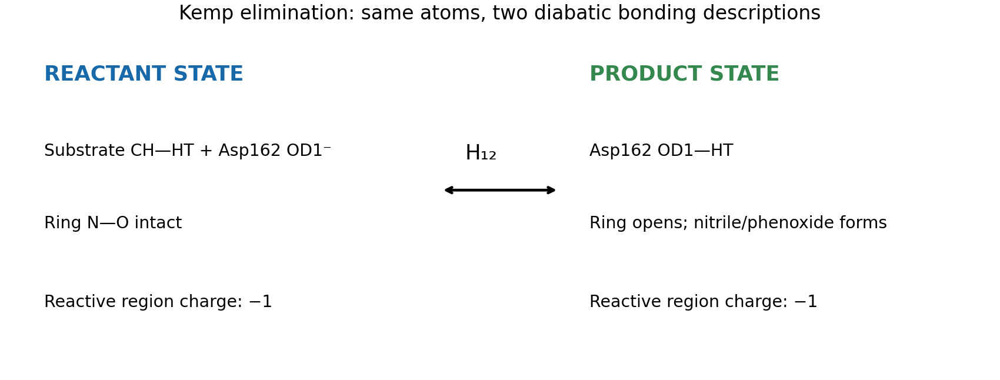

Reactant state
Before
The substrate holds the proton and its ring is closed. Asp162 is ready to accept the proton.
Follow one reaction. See how EVB connects the starting and ending states. Then try changing the model settings yourself.
No installation is needed for the saved examples. Use the links in the slides or open the workshop page.
Open the workshop guideStart with the arrows at the bottom, or use the left and right arrow keys.
The substrate is the molecule the enzyme acts on. Asp162, part of the enzyme, accepts a proton (a hydrogen nucleus) from it. As the C–H bond breaks, the small ring opens and the product forms.

Same atoms; different bonding descriptions.
This workshop follows the linked changes between reactant and product. It does not add a separately simulated intermediate.
The substrate holds the proton and its ring is closed. Asp162 is ready to accept the proton.
Asp162 holds the proton. The substrate ring is open.
EVB uses both descriptions to model the bond changes.
Each has its own bond and charge description for the same atoms.
Moves the product-state energy up or down relative to the reactant.
Controls how strongly the reactant and product descriptions mix.
Neither α nor H₁₂ is the reaction barrier. Both affect the profile, so they need evidence-based choices in real calculations.
Open the small EVB example. Move one control at a time. Watch how the curve changes when you change the energy offset, then when you change the coupling.
Open the EVB exampleTake about 5 minutes. The small example teaches the controls; it is not the full enzyme calculation.
The energy-gap coordinate compares the reactant and product state energies. It is not distance or time.
Free energy relative to the reactant. The rise is the estimated barrier; the product level gives the reaction free energy.
A peak in a binned profile is not, by itself, a picture of the molecular transition state.
Open the saved enzyme profile →Try the parameter comparison. You will find different offset/coupling pairs that give similar peak heights, while their product-versus-reactant energies can differ.
Open the settings comparisonThese are teaching examples made from saved data. A target match is not a parameter fit or a validated prediction.
The short OpenMM example is for learning to read the method. It does not reproduce the paper's longer Q6 simulation.
Return to the hands-on guide →
Listov et al., Nature (2025). Paper